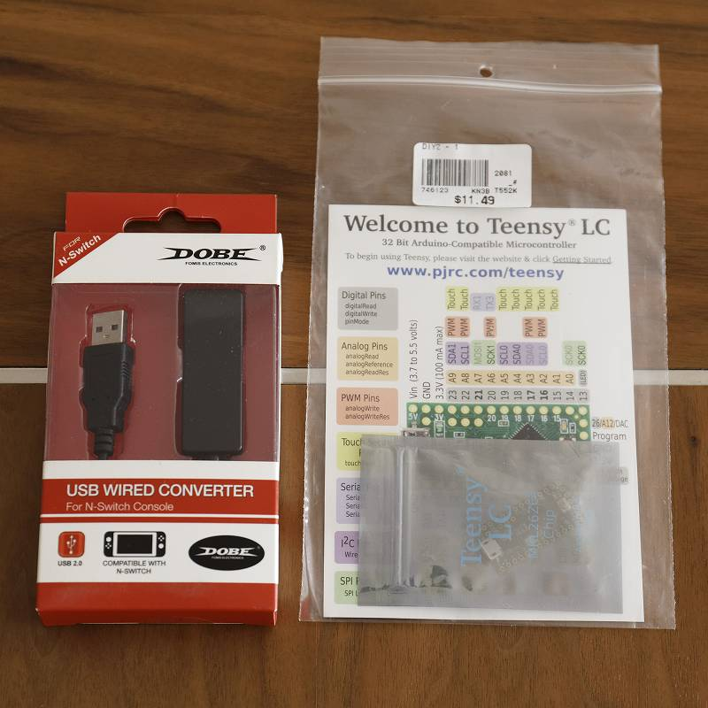
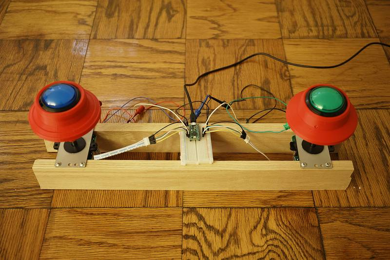

Nintendo Switch で動く自作コントローラ製作記録
概要
Nintendo Switch の グルーヴコースター ワイワイパーティ のためにコントローラ(BOOSTER)を自作したのでその記録
はじめに
グルーヴコースターの専用コントローラは自作するのが定石のようで、 検索してみるといろいろと見つけることができます。 しかし検索してみつかるもののほとんどはPC(Steam)版を対象としており、 Nintendo Switch は普通のUSBコントローラを受け付けないのでそのままでは使用することができません。 いろいろ試してみた結果、以下を組み合わせて Nintendo Switch で動作させることに成功しました。
-
BOOSTERの機構、電気回路、および Teensy 用スケッチ https://github.com/vikbez/groovecoastercontroller
-
Teensy を X-Input コントローラとして動作させるためのライブラリ https://github.com/topics/xinput-controller
-
DOBEアダプタと Teensy LC

※DOBEアダプタ：X-Input のコントローラを N-Switch に Proコンとして認識させるアダプタ
完成品

はんだ付けは面倒だったので省略。
補足
基本的に bikbez 氏の設計に沿って作りましたが以下の点を変更しています。
- ボタンはフラット型、ドーム型試してドーム型にしました
- ボタンの反響音を抑えるために分解してスポンジを挟みました
- レバーの長さに合わせて"お椀"の曲率を調整しました
- レバーのスプリングは固いもの(1lb->4lb)に交換しました(標準だと軽過ぎた)
- レバーのシャフト接続部分には M6 のインサートナットを使いました(がたつきを抑えるため)
- ベニヤを用意するのが面倒だったので手元にあった 1x3 の木材を使用しました
- ボタンの LED は光りません(回路を組むのが面倒だったので)
- マイクロスイッチが標準では重い(200g？)ので軽いものに交換予定
マイコンで N-Switch 用コントローラを実装することも考えたのですが1週間くらいかかりそうだと感じたのと、DOBEアダプタの遅延が問題なかったので行っていません。
そのほか参考
- 自製GrooveCoaster控制器 http://knuckleslee.blogspot.com/2018/04/groovecoaster.html
- GROOVE COASTER 4(グルーヴコースター) 自宅購入 + 後期加工 https://kokoa-love.blogspot.com/2018/12/groove-coaster-4.html
- Groove Coaster PC Controller [PART 1: Booster Hardware] https://www.instructables.com/id/Groove-Coaster-PC-Controller-PART-1-Booster-Hardwa/
- TinyBooster https://pls.booth.pm